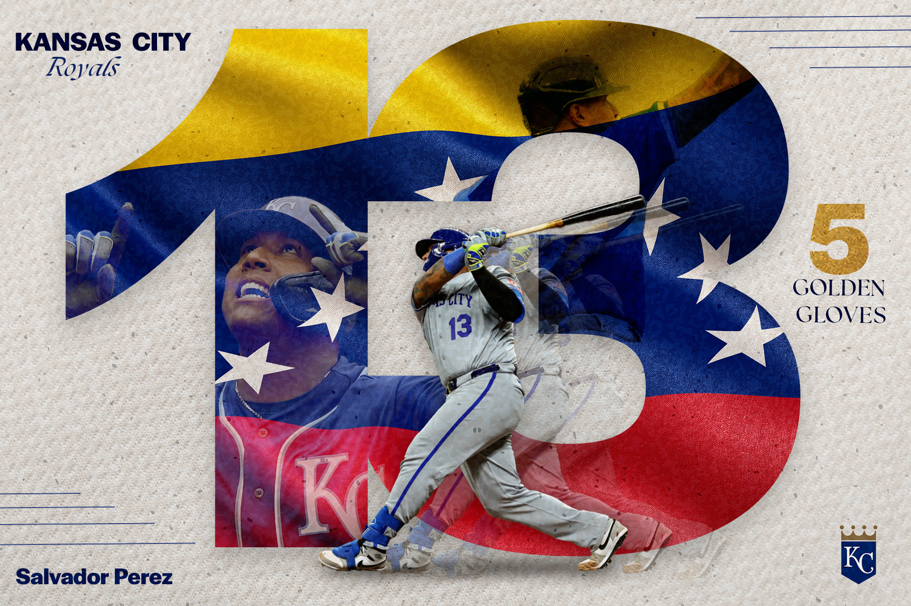
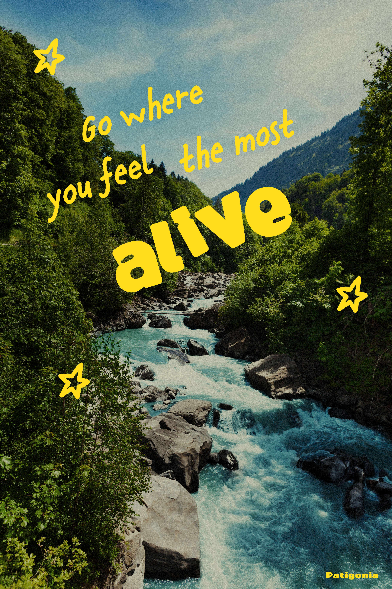
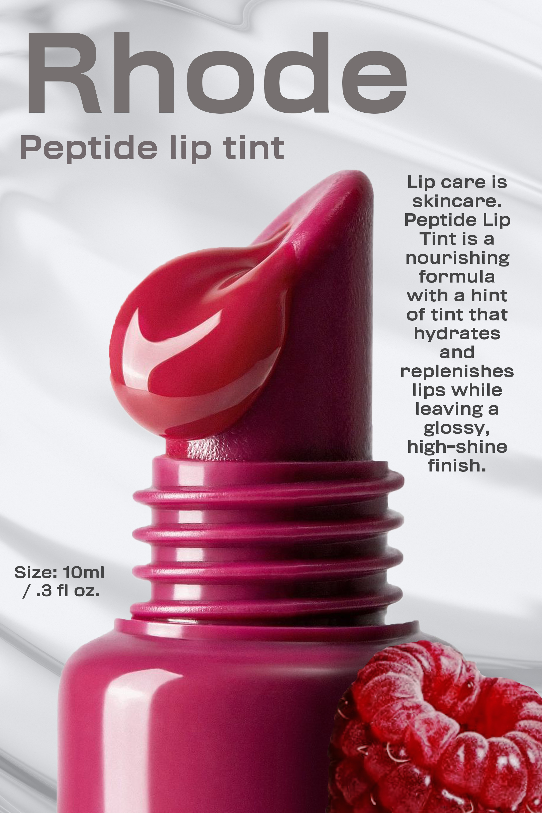
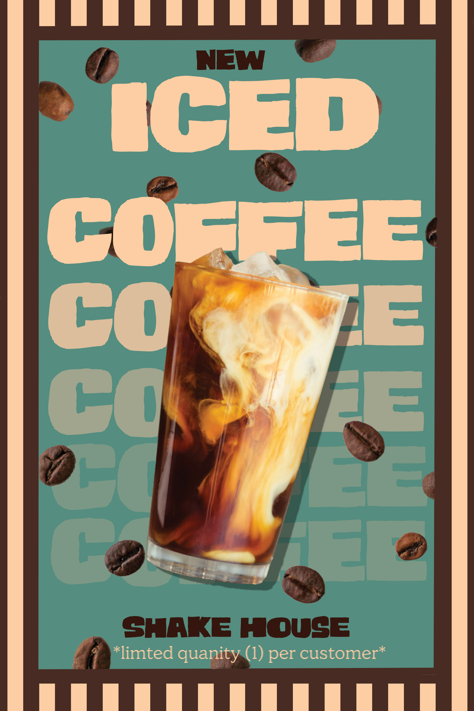

My Portfolio
Welcome to my portfolio! Here you can find a collection of my work and projects.
Project 1: Sports Spread

This project involved creating a graphic spread for a sports magazine. The design focused on the nomination of an up-and-coming athlete for rookie of the year.
Project 2: Campaign Poster

This project involved creating a poster advertisement for a popular brand. The design aimed to capture attention for their new exploring the outdoors campaign.
Project 3: Branding Reimaged

This project was an independent work that was meant to emulate the brand Rhode. This was meant to showcase their new lip shade berry. I wanted to create work that reflects not only the essence of the brand but wanted to limit myself to a brand visual marker. It was meant to be shown on a poster format possibly in front of a mall or a high traffic area. This piece was meant to be a set with other shades that came out for a winter collection featuring common fruits for an audience that is having a bit of summer nostalgia in the winter.
Project 4: Promotional Design

I created this poster for a fiction brand in promotion of their new iced coffee. I wanted a cohesive theme for this poster with a pop of contrast. This place was created to be a new shop that’s primary audience was a younger demographic.Becuase this would be one of the first promos I wanted to include a customer limit because of their limited high-quality ingredients they use. This business would have been located in a coastal area, possibly on the east coast in North Carolina or Florida. The colors were intentionally chosen to be a bit beachier for someone who wanted a nice burst of caffeine with it being a hot drink.